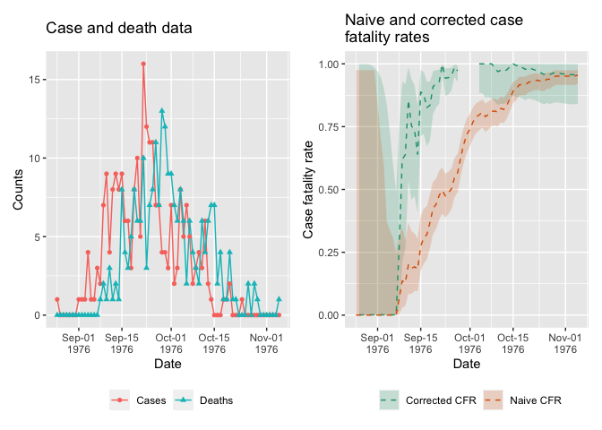

The goal of datadelay is to provide simple, fast methods for estimation of disease severity and under-reporting in real-time, accounting for delays in epidemic timeseries.
Installation
You can install the development version of datadelay from GitHub with:
# install.packages("devtools")
devtools::install_github("epiverse-trace/datadelay")
# Also install epiparameter for epidemiological parameter values
devtools::install_github("epiverse-trace/epiparameter")Quick start
Ebola 1976
This example of basic usage shows how to use datadelay to estimate case fatality ratios from the 1976 Ebola outbreak.
# Load package
library(datadelay)
# Load the Ebola 1976 data provided with the package
data("ebola1976")
# read epidist for EVD onset to death from {epiparameter}
# accesses parameters reported in https://doi.org/10.1016/S0140-6736(18)31387-4
onset_to_death_ebola <- epiparameter::epidist_db(
disease = "Ebola Virus Disease",
epi_dist = "onset_to_death",
author = "Barry_etal"
)
# Calculate the static naive and corrected CFRs
ncfr <- static_cfr(ebola1976, correct_for_delays = FALSE)
ccfr <- static_cfr(ebola1976, correct_for_delays = TRUE, onset_to_death_ebola)
# Print nicely formatted case fatality rate estimates
format_cfr_neatly(ncfr)
#> [1] "CFR: 0.96% (95% CI: 0.92% - 0.98%)"
format_cfr_neatly(ccfr)
#> [1] "CFR: 0.96% (95% CI: 0.84% - 1.00%)"Calculate and plot real-time CFR estimates up to a given point in time
# Calculate naive and corrected static CFRs up to a given point in time
df_ncfr <- rolling_cfr(ebola1976, correct_for_delays = FALSE)
df_ccfr <- rolling_cfr(
ebola1976,
correct_for_delays = TRUE,
onset_to_death_ebola
)
# Plotting case and death data along with CFRs
plot_data_and_cfr(df_ncfr, df_ccfr)
#> Warning: Removed 1 row containing missing values (`geom_line()`).
This package is currently a concept, as defined by the RECON software lifecycle. This means that essential features and mechanisms are still being developed, and the package is not ready for use outside of the development team.